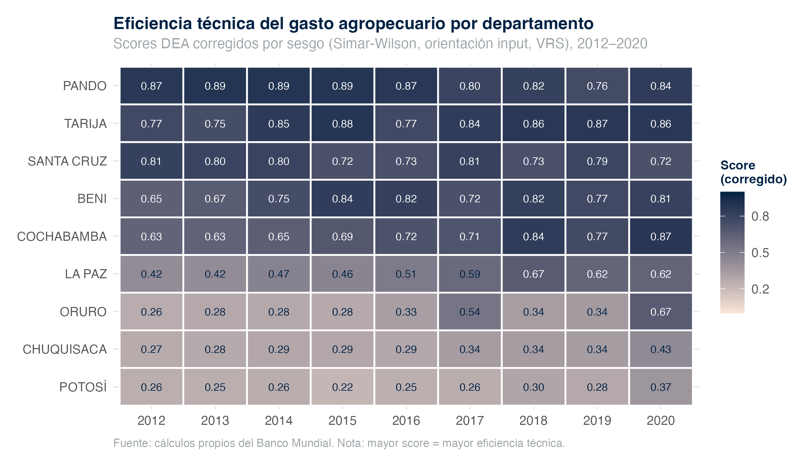
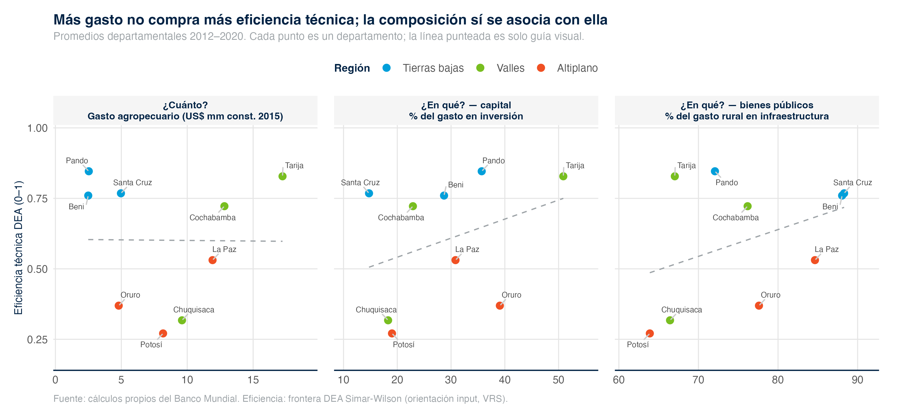
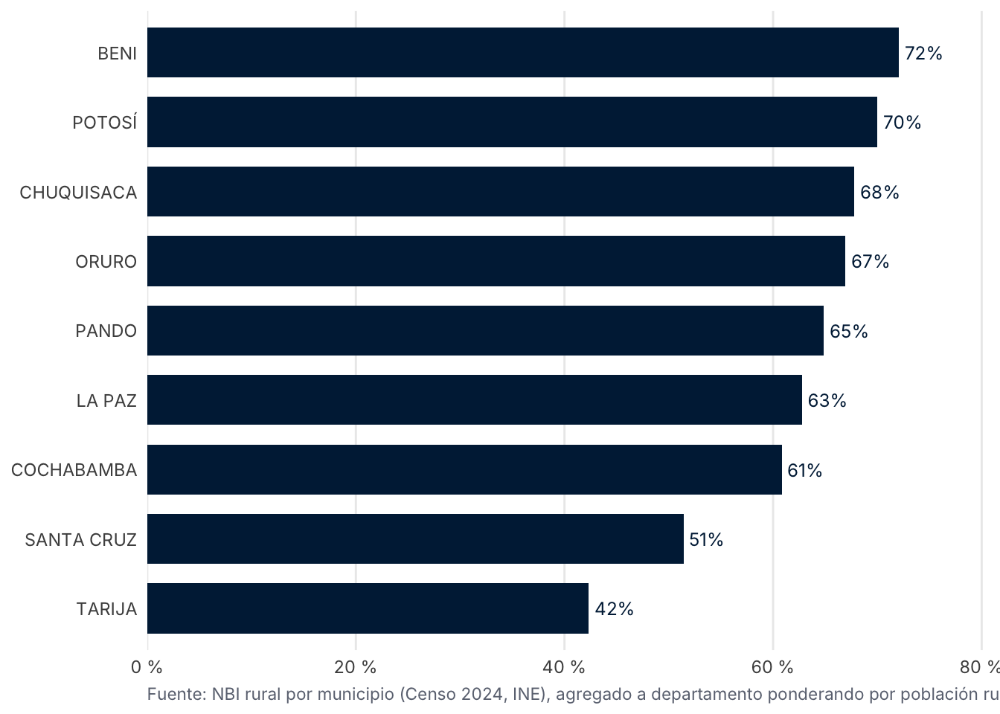

| Eficiencia técnica departamental — DEA Simar-Wilson, 2012–2020 | |||
|---|---|---|---|
| Departamento | Eficiencia (corregida) | Sin corregir | Años en frontera |
| Pando | 0,85 | 0,99 | 4 |
| Tarija | 0,83 | 0,93 | 3 |
| Santa Cruz | 0,77 | 0,95 | 3 |
| Beni | 0,76 | 0,92 | 3 |
| Cochabamba | 0,72 | 0,81 | 2 |
| La Paz | 0,53 | 0,58 | 0 |
| Oruro | 0,37 | 0,41 | 0 |
| Chuquisaca | 0,32 | 0,34 | 0 |
| Potosí | 0,27 | 0,29 | 0 |
Puntaje de eficiencia insumo-orientado corregido por sesgo (bootstrap Simar-Wilson 1998). Fuente: dea_simar_wilson_results.rds. |
|||
Eficiencia y equidad del gasto
DEA Simar-Wilson, panel de productividad e incidencia subnacional
Este capítulo evalúa si el gasto agropecuario boliviano es eficiente y equitativo. Combina el análisis envolvente de datos (DEA) con bootstrap de Simar-Wilson a nivel departamental, regresiones panel de productividad y un análisis de incidencia y focalización con datos de hogares y del Censo.
Apoyo al productor — PSE en contexto LAC
Composición de los apoyos
La metodología OCDE distingue entre Producer Support Estimate (PSE) —transferencias al productor por precios, pagos y reducción de insumos—, General Services Support Estimate (GSSE) —bienes públicos al sector: I+D, sanidad, infraestructura— y Consumer Support Estimate (CSE) —transferencias hacia consumidores.


Bolivia frente a LAC


Patrón dual de protección (hallazgo F02–F03)
El %PSE de Bolivia se ubicó en 5,8 % del valor bruto de producción en 2018, el quinto nivel más alto entre los países LAC monitoreados por el IDB AgriMonitor ese año (por encima: Brasil, Chile, Colombia y Argentina; por debajo: Paraguay, Ecuador, Perú, México y Costa Rica).
La protección es dual según la tasa nominal de protección (NRP) por commodity:
- Tasa los exportables (transferencia implícita del productor al consumidor): soya −37 %, arroz −33 %.
- Protege la seguridad alimentaria: maíz +46 %, trigo +28 %.
El patrón es coherente con la política explícita de soberanía alimentaria post-2009 y los controles de precios sobre exportables.
Eficiencia técnica departamental — DEA Simar-Wilson
Especificación
El análisis envolvente de datos (DEA) compara cada unidad territorial con la mejor combinación factible de insumos y productos observada en la muestra. La frontera es VRS (rendimientos variables a escala), agrupada (pooled) intertemporalmente sobre los 81 pares departamento-año del período 2012–2020 (9 departamentos × 9 años). Se reportan ambas orientaciones y se corrige el sesgo de la frontera determinista con bootstrap de Simar-Wilson (1998), B = 2 000 réplicas, intervalos al 95 %. La especificación está fijada en el ADR-0016.
- Insumos: gasto agropecuario estricto (USD constantes de 2015) y superficie cultivada total (ha).
- Productos: producción total (toneladas) y rendimiento de cereales (kg/ha).

Resultados por departamento
Un gradiente geográfico nítido
En promedio, los departamentos bolivianos operan con un puntaje de eficiencia corregido de 0,60 (rango 0,22–0,89). El ordenamiento dibuja un gradiente claro: las tierras bajas y los valles (Pando 0,85; Tarija 0,83; Santa Cruz 0,77; Beni 0,76; Cochabamba 0,72) operan cerca de la frontera, mientras que el altiplano (La Paz 0,53; Oruro 0,37; Potosí 0,27) y Chuquisaca (0,32) registran las mayores brechas. Ningún departamento del altiplano alcanzó la frontera de eficiencia en ningún año del período analizado.

Determinantes ambientales — segunda etapa
La segunda etapa de Simar y Wilson (2007) estima los determinantes de la (in)eficiencia mediante regresión truncada con bootstrap (no Tobit).
| Segunda etapa Simar-Wilson (2007) — regresión truncada | ||||
|---|---|---|---|---|
| Determinante | Coeficiente | IC 95% inf. | IC 95% sup. | Significativo |
| Precipitación | 0,352 | 0,262 | 0,454 | Sí |
| Deforestación | 0,001 | 0,000 | 0,001 | Sí |
Variable dependiente: eficiencia corregida. Fuente: dea_simar_wilson_results.rds. |
||||
La eficiencia refleja, en parte, una desventaja agroecológica
La precipitación emerge como un determinante positivo y significativo (coeficiente 0,35; IC 95 % [0,26; 0,45]): los departamentos con menor disponibilidad hídrica registran sistemáticamente menor eficiencia técnica. Una porción de la brecha del altiplano refleja por tanto una desventaja agroecológica estructural —aridez relativa, limitación de la precipitación— y no exclusivamente decisiones de asignación o de ejecución del gasto. La robustez de la ordenación es alta (Spearman 0,94 entre especificaciones).

Gasto y resultados — panel de productividad
| Determinantes de la TFP agrícola — estimación exploratoria | ||||
|---|---|---|---|---|
| Modelo | Coef. Inv | Coef. LC antrópica | R² ajustado | N |
| M1: TFP ~ Inv | 0,089 | — | 0,621 | 34 |
| M2: TFP ~ Inv + LC + tendencia | −0,006 | −0,277 | 0,783 | 34 |
| M3: M2 + PSE | 0,073 | 0,095 | 0,620 | 18 |
| feols(), variables en log, panel maestro v12. Resultados exploratorios — ver caveat. | ||||
La asociación gasto–resultados no es robusta
Las regresiones panel con efectos fijos que vinculan el gasto agropecuario con la productividad (TFP) y con la pobreza no arrojan una asociación robusta a especificaciones alternativas. El “dividendo de pobreza” que aparecía en estimaciones preliminares resultó ser un artefacto de la fuente subnacional (Jubileo) y de la ventana 2012–2018; al recomponer el panel sobre la fuente canónica desaparece (decisión ADR-0017).
La lectura del reporte técnico es que la efectividad del gasto está limitada por su composición y por rezagos de maduración, más que por su nivel. Estos coeficientes se presentan como exploratorios y no sostienen una interpretación causal; la relación gasto-resultados permanece en consolidación hasta cerrar las corridas pendientes sobre el panel v12.
Equidad — distribución del gasto entre municipios
La distribución del gasto agropecuario municipal es muy asimétrica: pocos municipios reciben grandes volúmenes y la mayoría queda con asignaciones modestas.


Equidad — focalización: gasto y pobreza rural (NBI)
¿Llega el gasto agropecuario a los territorios con mayor necesidad? Cruzando el gasto agropecuario municipal devengado (MEFP 2024) con la incidencia de pobreza por Necesidades Básicas Insatisfechas (NBI) rural del Censo 2024, la respuesta es: no de forma sistemática.

El gasto no se concentra donde más necesidad hay
La correlación entre el gasto agropecuario per cápita rural municipal y la pobreza rural por NBI es débil y no significativa en rangos (n = 298 municipios; Spearman ρ = 0,06, p = 0,32; Pearson r = 0,13). Los departamentos del altiplano y la Amazonía concentran las mayores tasas de NBI rural (Beni 72 %, Potosí 70 %, Chuquisaca 68 %), pero no reciben proporcionalmente más gasto agropecuario por habitante rural. La focalización territorial del gasto sobre la necesidad es, en la práctica, plana.
Equidad — incidencia de pobreza por departamento

Asimetría territorial oriente–occidente
Los departamentos del occidente y los valles —Chuquisaca (51 %), Potosí (47 %), La Paz (45 %)— concentran las mayores tasas de pobreza moderada, mientras Santa Cruz (26 %), Tarija (31 %) y Pando (34 %) se ubican por debajo. El patrón replica la dualidad estructural oriente–occidente y refuerza la lectura de la sección anterior: una política de bienes públicos sectoriales focalizada por territorio y una política de transferencias focalizada por hogar producen incidencias distintas.
Síntesis
| Dimensión | Hallazgo | Implicación |
|---|---|---|
| PSE Bolivia 2018 | 5,8 % — 5° en LAC | Apoyo moderado-bajo en contexto regional |
| Patrón dual (NRP) | Tasa soya/arroz, protege maíz/trigo | Política explícita de soberanía alimentaria |
| DEA departamental | Media 0,60; Pando 0,85 … Potosí 0,27 | Gradiente geográfico nítido |
| 2ª etapa DEA | Precipitación significativa (0,35) | Brecha en parte agroecológica, no solo de gestión |
| Gasto → TFP/pobreza | Asociación no robusta (ADR-0017) | Problema de composición y rezagos, no de nivel |
| Focalización NBI | Correlación plana (ρ = 0,06, n.s.) | El gasto no llega donde más necesidad hay |
| Incidencia | Chuquisaca/Potosí/La Paz 45–51 % | Asimetría territorial oriente–occidente |
Los retornos del gasto agropecuario son heterogéneos por territorio, vinculados en parte a condiciones agroecológicas más que a la sola gestión, y no se focalizan sobre la necesidad. Estos hallazgos motivan las opciones de reorientación del capítulo de recomendaciones del reporte técnico.